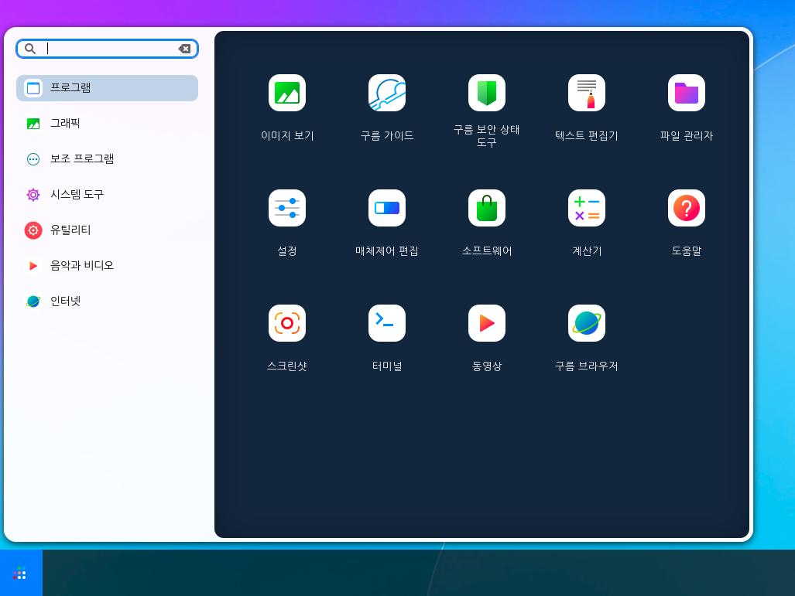
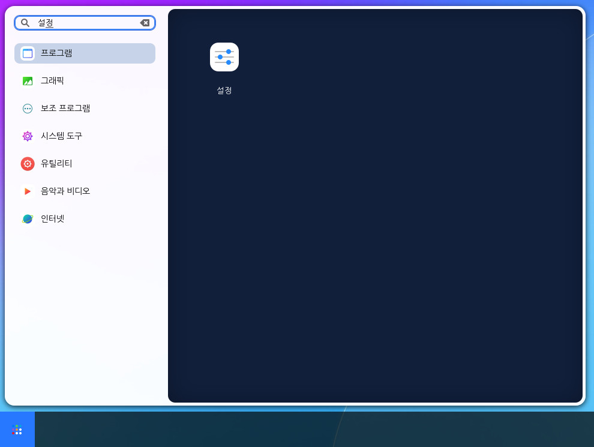
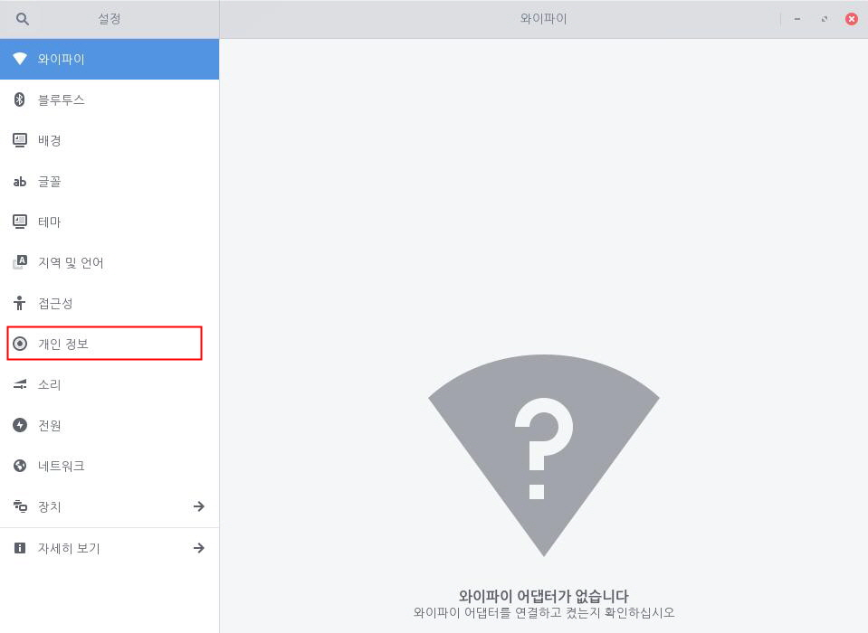
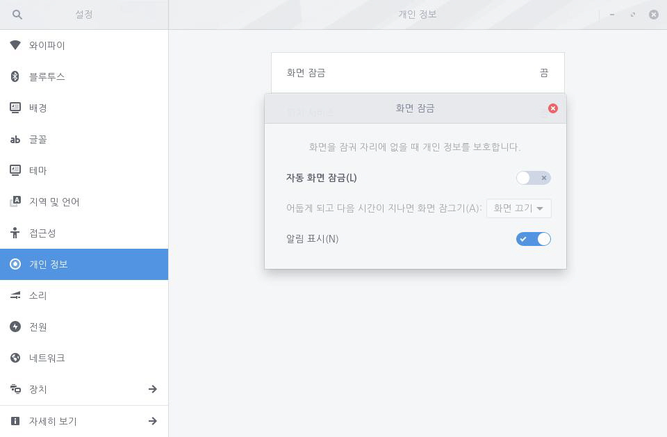

컴퓨터를 사용하지 않을 때 화면 잠금을 설정하여 다른 사람이 컴퓨터에 접근하는 것을 방지할 수 있습니다. 자동 화면 잠금을 설정하면 사용자가 화면 잠금하는 것을 잊어버려도 컴퓨터가 일정 시간 이후에 자동으로 화면을 잠금니다. 다음 단계를 수행하여 자동 화면 잠금을 설정합니다.1. 좌측 하단의 [시작]아이콘을 클릭하고 검색 창에 "설정"을 입력한 후 [설정] 애플리케이션을 실행합니다.
2. [설정] 애플리케이션 사이드 바에서 [개인 정보]를 클릭한 후 [화면 잠금]을 클릭합니다.
3. [자동 화면 잠금] 설정 단추를 오른쪽으로 밀어 켭니다. [어둡게 되고 다음 시간이 지나면 화면 잠그기]에서 화면을 잠그는 시간을 설정할 수 있습니다.잠금 화면에서 안내 메시지를 표시할 수 있습니다. 이 기능을 사용하면 잠금 화면에서 메시지를 확인할 수 있어 편리하지만 다른 사람들도 안내 메시지를 볼 수 있습니다. 안내 메시지를 표시하지 않으려면 [알림 표시] 설정 단추를 왼쪽으로 밀어 끕니다. 화면이 잠겼을 때 키보드로 입력하거나 마우스를 움직이면 로그인 화면이 나타납니다. 암호를 입력하면 화면 잠금을 해제할 수 있으며, 암호를 한번 입력하면 해당 암호가 자동으로 입력됩니다.